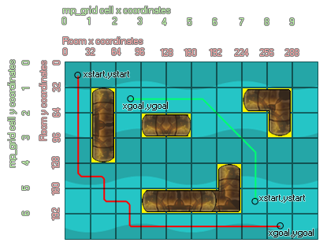

mp_grid_path(id, path, xstart, ystart, xgoal, ygoal, allowdiag);
| Argument | Description |
|---|---|
| id | Index of the mp_grid that is to be used |
| path | index of the path that is to be used by the function |
| x start | Starting x coordinate of the new path |
| y start | Starting y coordinate of the new path |
| xgoal | Finishing x coordinate of the new path |
| ygoal | Finishing y coordinate of the new path |
| allowdiag | Indicates whether diagonal moves are allowed instead of just horizontal or vertical |
Returns: Boolean.
With this function you can create a path that will navigate from a
start point to a finish point using an mp_grid that you
have previously defined, avoiding any obstacles that have already
been added into the grid. The xstart and ystart arguments indicate
the start of the path in room coordinates, while xgoal, ygoal
arguments indicate the destination. You can also select either
horizontal/vertical movement only, or allow full diagonal movements
by specifying true in the allowdiag argument. The function returns
either true (it succeeded in finding a path) or false (it failed)
as well as setting the chosen path. In the following image, you can
see how this all works together:

As you can see, the "pipe" objects have been added into the
grid, meaning that any path created has to go around them. There
are two paths created in the image, one (green) has been made with
diagonals allowed and the other (red) without. The difference
between the two is pretty obvious with the green path appearing
much more "elegant" and direct, but it all depends what use you are
going to put them to which one you prefer. Note that the path is
independent of the current instance - it is a path through the
grid, not a path for a specific instance, even though a specific
instance may have the variable that stores the path index. You may
also need to debug these paths to see how they are made and
interact within the game environment, in which case you should be
using the draw_path
function.
NOTE: The path must have been previously created (either
in code with path_add
or as a resource) and will be replaced by the path generated by
this function.
globalvar grid;
grid = mp_grid_create(0, 0, room_width div 32, room_height div 32,
32, 32);
mp_grid_add_instances(grid, obj_wall, false);
with (obj_Enemy)
{
path = path_add();
if mp_grid_path(grid, path, x, y, obj_Player.x,
obj_Player.y, 1)
{
path_start(path, 0, 3, 0);
}
}
The above code creates a global variable "grid", then generates an mp_grid and assigns its index (id) to that variable for use in all further mp_grid function calls. It then adds all instances of "obj_Wall" into the grid before getting all instances of "obj_Enemy" to create a path and then use mp_grid_path to calculate a rout from their position to the position of "obj_Player". If a route exists then the object starts itself along the path.